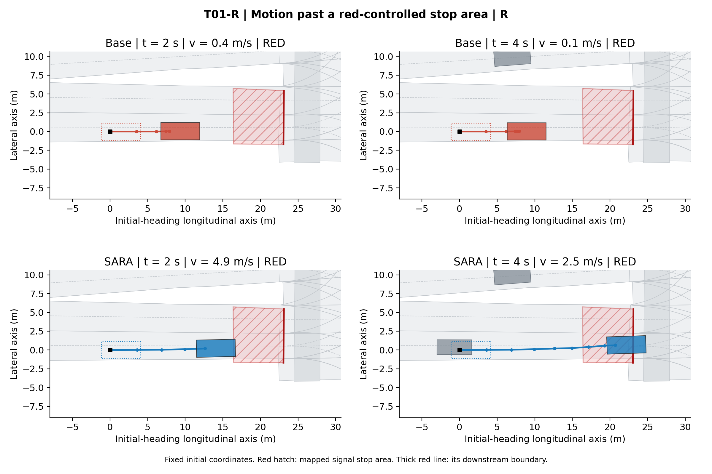
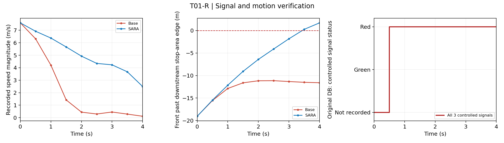
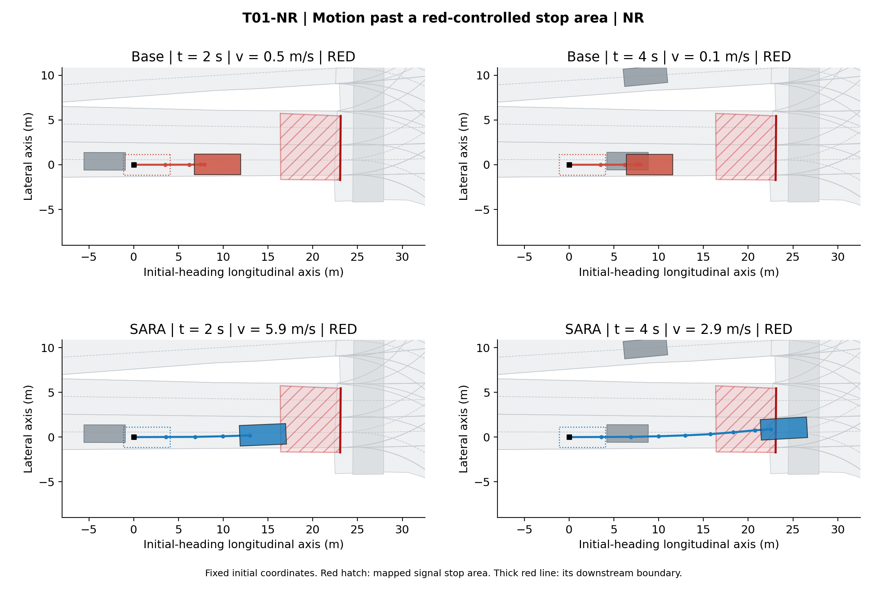
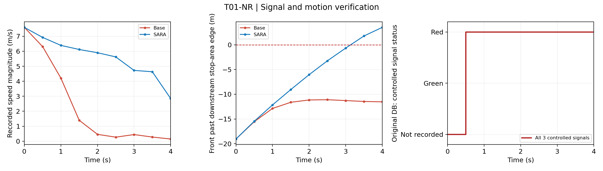

一个新场景，R主版本、NR补充。Base在边界前，SARA仍减速但在红灯期间车头越过地图停止区的下游边界。已逐项核对车道、停止区、受控连接段和原始灯色。
红色斜线是停止区，粗红线是其下游边界，不是DAC的不可行驶路面。t=0信号未记录，0.5–4秒三受控连接段均为红灯。
Base PDM=0.780，SARA PDM=1.000；两边 NC、DAC、TTC 都为 1。SARA 仍减速，但车头跨过停止区下游边界；Base 留在边界前约 11.5m。


GIF · 3/3.5/4s 关键帧 · 前视对照 · SARA 4s 原始前视
Base PDM=0.782，SARA PDM=1.000；两边 NC、DAC、TTC 都为 1。SARA 仍减速，但车头跨过停止区下游边界；Base 留在边界前约 11.5m。


GIF · 3/3.5/4s 关键帧 · 前视对照 · SARA 4s 原始前视